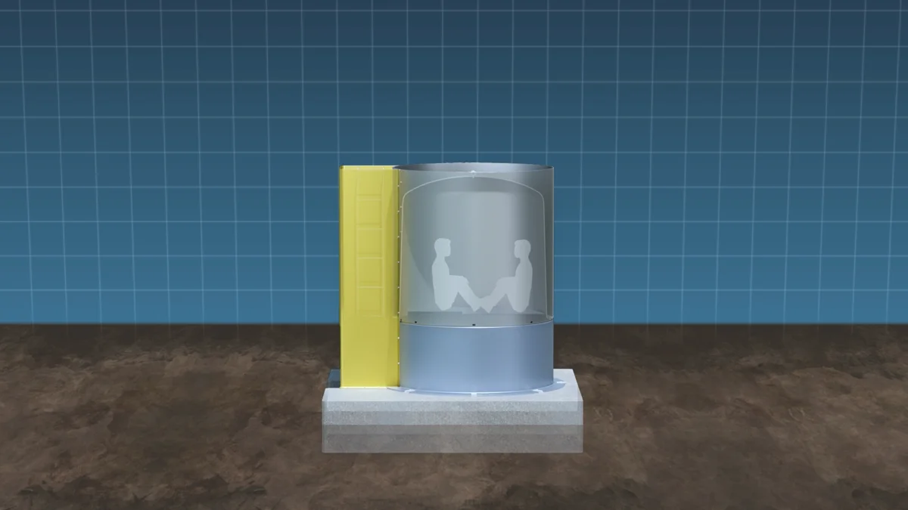
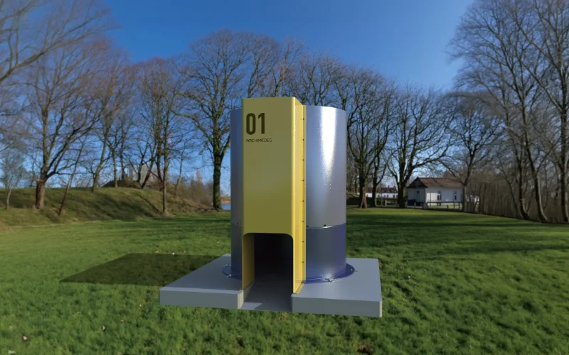
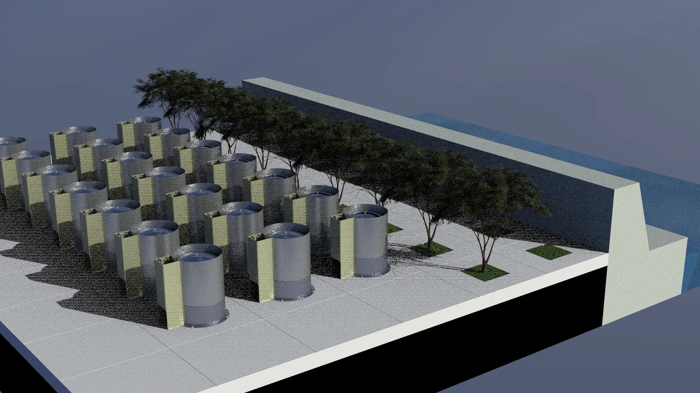
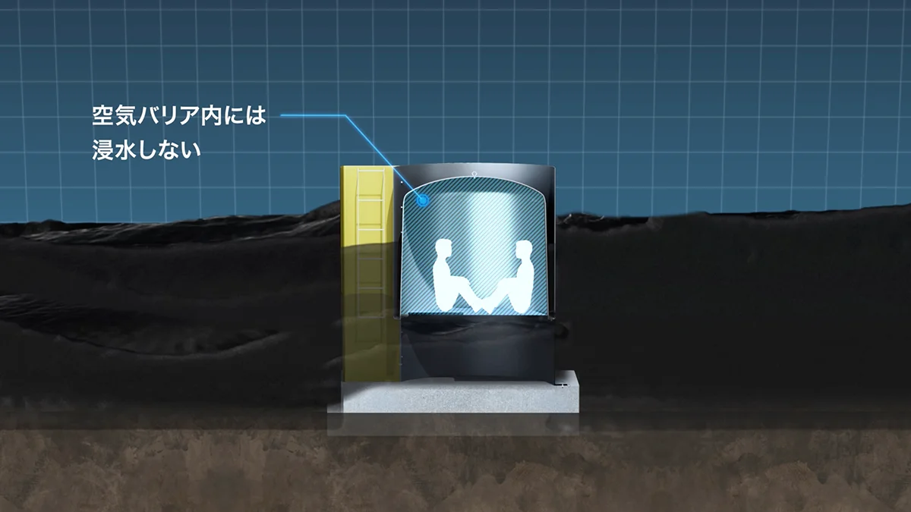
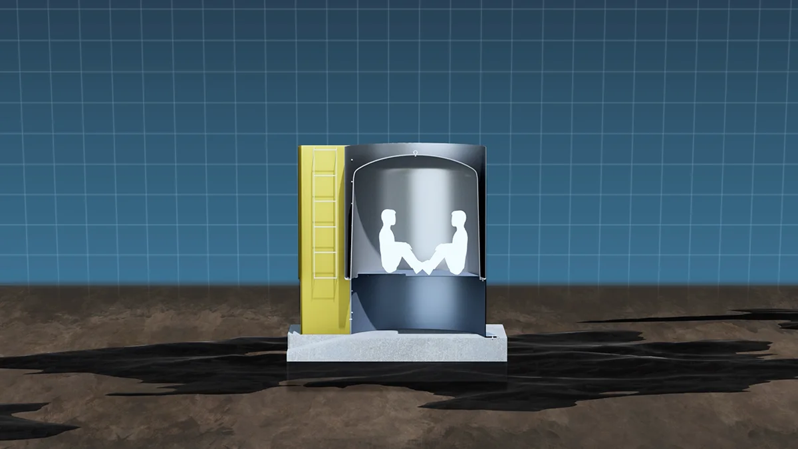
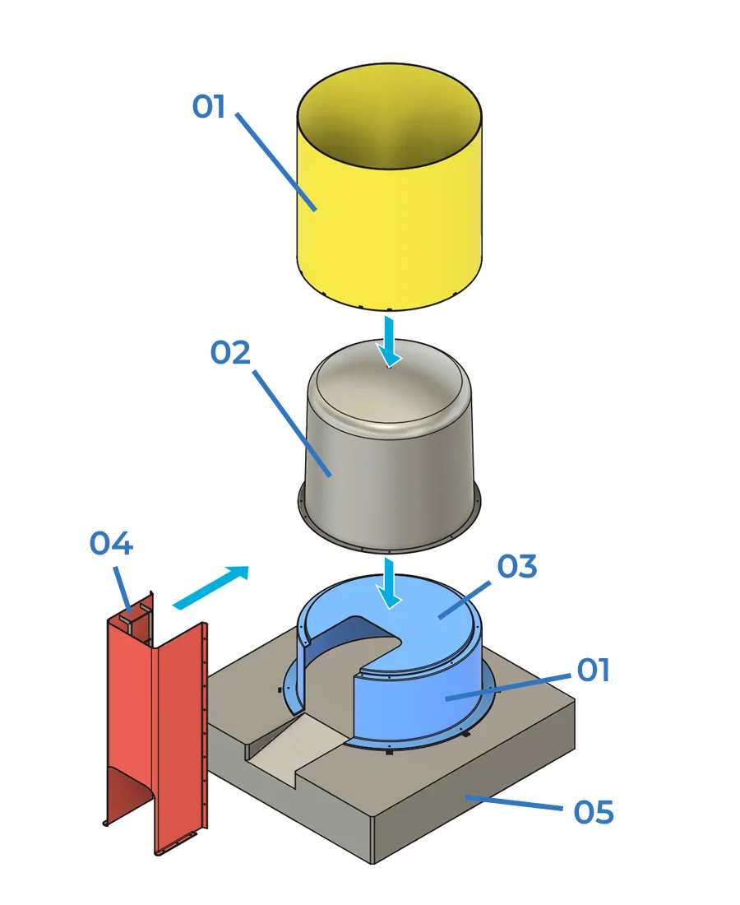
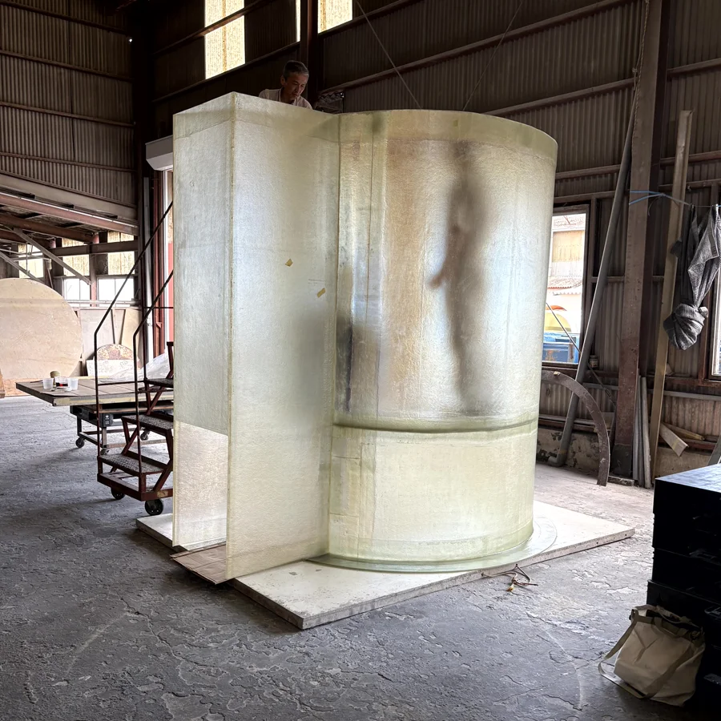

円筒形状構造
多方向からの津波に耐えうる構造としています。
PRODUCT DETAIL
津波などの災害に備える地上固定型の防災シェルター。
住宅敷地内に設置できる、身近な避難設備です。


ARCHIMEDES は、地上固定型なので、水位が上昇して浸水しても浮揚式シェルターのように水面まで浮上することはなく、避難者は地面から約80cmの高さに確保された避難スペースに留まり、水位が下がった後に外部に脱出できるようになっています。
また、津波だけでなく、地震、雷、竜巻などの災害時にも避難場所として利用できます。また、大事な家族の一員であるペットと一緒に避難することもできます。さらに、倉庫替わりの利用もできるため、家族のアルバムなど大切な荷物を保管することができます。
— FEATURES

多方向からの津波に耐えうる構造としています。

ハッチや扉を設けることなく、「空気溜まりの原理」を利用したシンプルな構造にて、避難スペースに空気を確保します。

外壁部が本体を覆う二重構造により、津波や漂流物の衝撃を緩和します。さらに床部を地面から約80cmの高さに設けることで、安全な避難スペースと出入り口を確保しています。
— SPECIFICATIONS
| 空気確保量 | 津波襲来時に3〜4名の大人分 |
|---|---|
| 高さ | 2m60cm（外壁部） |
| 直径 | 1m92cm（外壁部） |
| 床高さ | 基礎体から80cm上方 |
| 基礎部 | コンクリート、スクリュー杭 |
| 販売開始予定 | 2026年～2027年（予定） |
— STRUCTURE
コンクリート基礎の上に、FRP性の本体をアンカーボルトで固定するだけで簡単に設置できます。シャッターやハッチが不要で、本体はFRP製なので塩害に強く、30年以上メンテナンスフリーに近い運用が可能です。

シェルター本体を保護する外壁の構造です。
避難時に使用する居室空間です。
居室空間の床を構成する部分です。
脱出時に使用する通路です。
シェルター全体を支えるコンクリート基礎です。
宮崎大学との共同開発製品
宮崎大学との共同研究プロジェクトにおいて、模型を用いた水路実験を実施しました。学術的な知見を取り入れた検証により、製品の信頼性を確認しています。

模型を用いた水路実験では、津波を想定した水流に対して、シェルター内部の床上に浸水が発生しないことを確認しています。空気溜まりの原理と二重構造により、浸水時にも内部で待機できる避難スペースが確保されます。